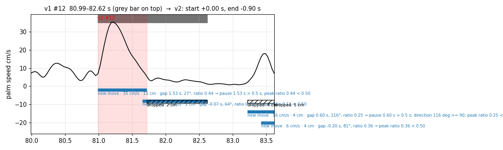
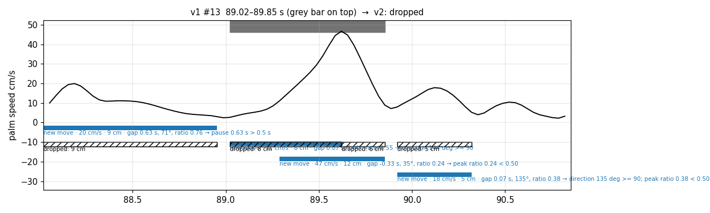
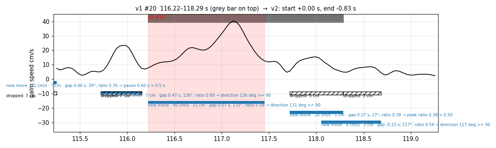
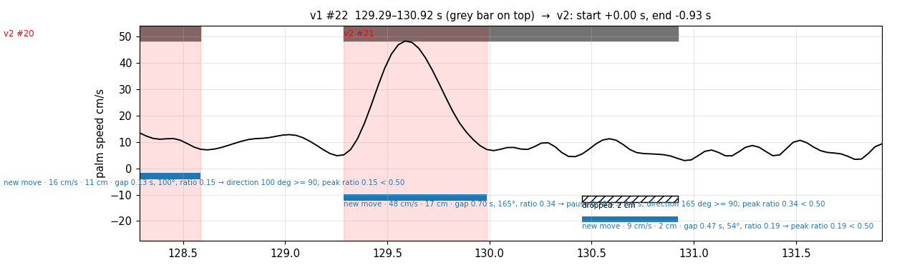
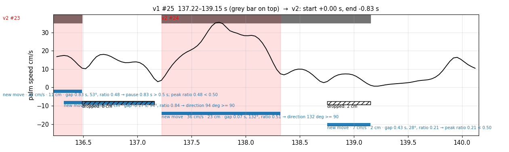
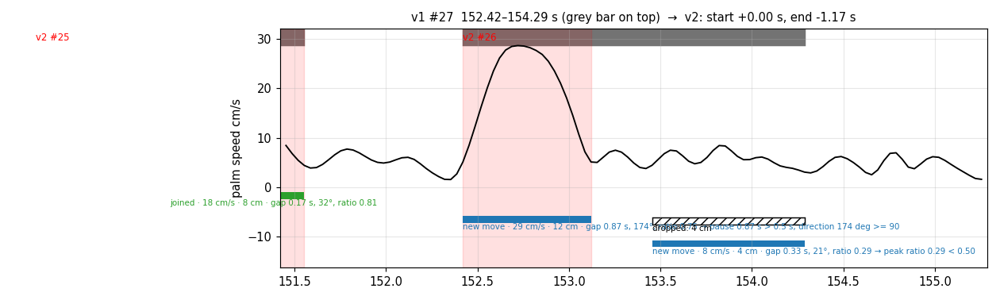
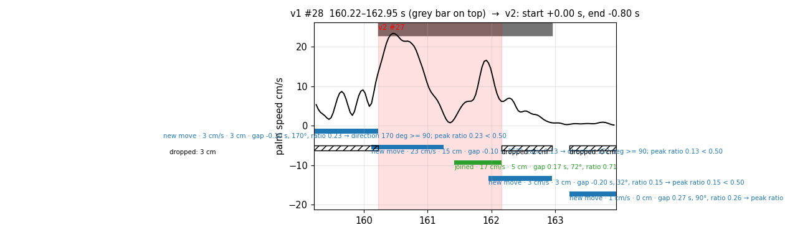
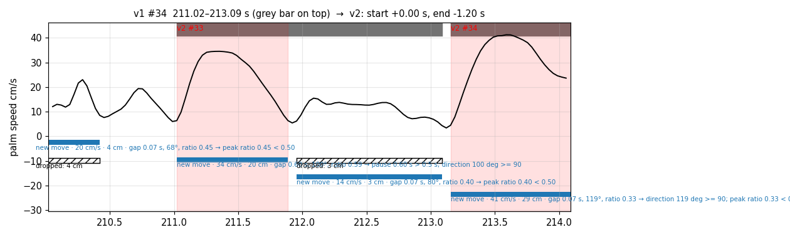

Video = the v1 move with 0.5 s before and after. Red border = what v2 keeps; orange border = what v1 had but v2 cut off; no border = context. Right: speed curve and merge decisions (see the merge page legend).
caption (A→B, on the v1 cut): Hold the orange toy table.

caption (A→B, on the v1 cut): — (shorter than 1 s, not captioned)

caption (A→B, on the v1 cut): Grasp the orange toy table.

caption (A→B, on the v1 cut): Press the orange H-shaped piece into the assembly.

caption (A→B, on the v1 cut): Pick up the orange stick.

caption (A→B, on the v1 cut): Insert the orange stick into the orange H-shaped piece.

caption (A→B, on the v1 cut): Pick up the orange stick and place it on the desk.

caption (A→B, on the v1 cut): Pick up the orange stick.
